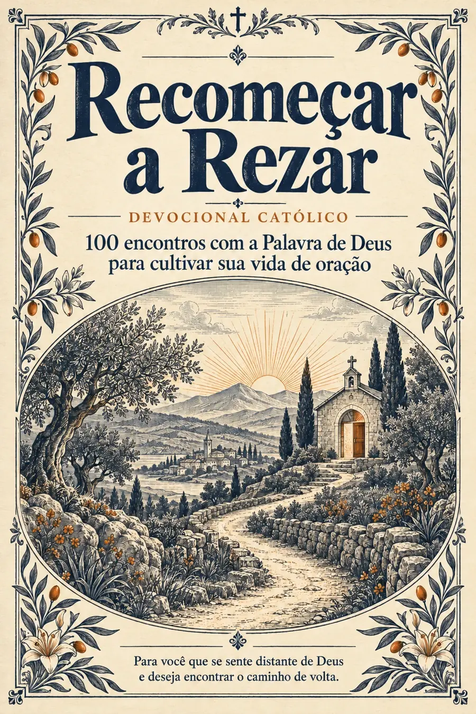
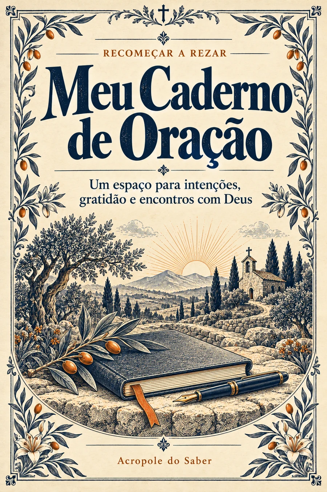
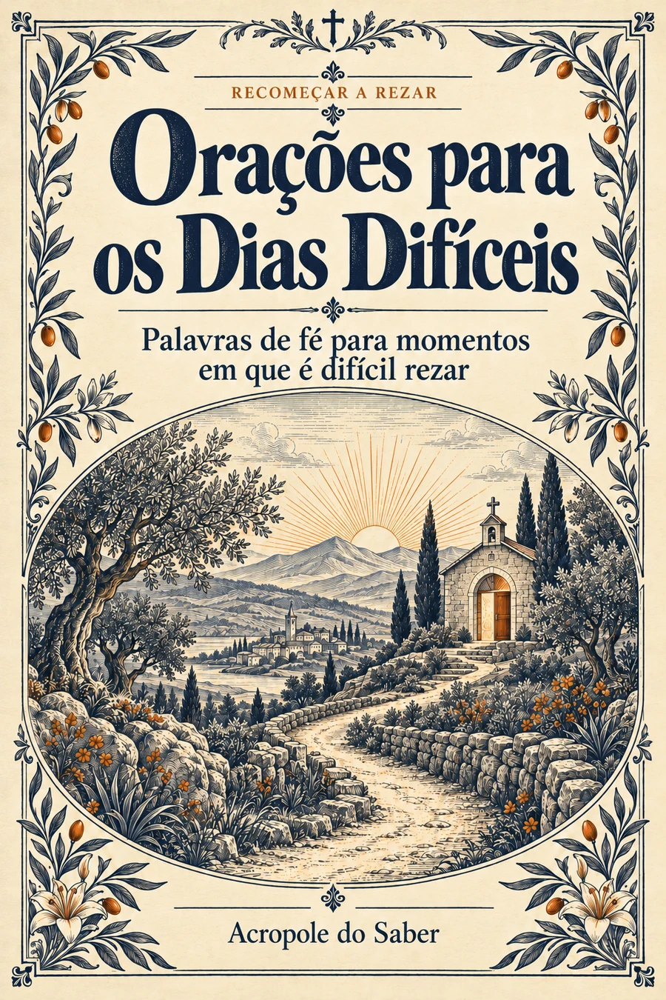

Acolha a Palavra
O trecho bíblico está na própria página, com a referência para você conhecer e aprofundar a leitura.
DEVOCIONAL CATÓLICO · 100 ENCONTROS
Para você que se sente distante de Deus e deseja encontrar o caminho de volta.
Recomeçar a Rezar reúne a Palavra de Deus, reflexões e orações em um percurso acolhedor, para viver no seu ritmo.

UM ENCONTRO POR PÁGINA
Uma estrutura simples para acompanhar a oração, do primeiro ao centésimo encontro.
As páginas passam automaticamente. Pause para ler ou toque em uma página para ampliar.
O trecho bíblico está na própria página, com a referência para você conhecer e aprofundar a leitura.
Uma meditação e uma pergunta ajudam a considerar o que a passagem desperta em você.
Uma oração oferece palavras para começar. Depois, você pode continuar ou permanecer em silêncio.
AO LONGO DOS 100 ENCONTROS
Do primeiro pedido de ajuda à disposição de continuar.
Acolhimento, misericórdia e o desejo de recomeçar.
Gratidão, cansaço, dúvidas e necessidades de cada dia.
Medo, espera, discernimento e pequenos passos.
Reconhecer, reparar e encontrar caminhos de reconciliação.
Escuta, família, comunidade, serviço e caridade.
Palavra, vida sacramental e uma oração que segue com você.
DOIS BÔNUS INCLUÍDOS
Materiais complementares para registrar o que vive e encontrar palavras quando precisar.

Um lugar para suas intenções, agradecimentos, passagens bíblicas e registros pessoais.

Palavras de fé para os momentos em que é difícil começar a rezar.
QUEM JÁ COMEÇOU
Os relatos descrevem experiências pessoais. O devocional é um material de espiritualidade e não substitui acompanhamento psicológico ou médico.
SEU CONJUNTO COMPLETO
Receba o devocional e os dois materiais de apoio para viver a leitura e a oração no seu ritmo.
Economize R$ 79,10
Pagamento único. Sem mensalidade.
Em breve, disponível para compra.
Formas disponíveis conforme o checkout da Hotmart.
CONHEÇA O MATERIAL COM TRANQUILIDADE
Depois da compra, você tem 7 dias para conhecer o devocional e os bônus. Se entender que o conjunto não é para você, solicite o reembolso integral dentro desse prazo pela Hotmart.
Precisa de ajuda? Escreva para acropolesaber@gmail.com.
PARA ESCOLHER COM TRANQUILIDADE
Para adultos católicos que desejam iniciar ou retomar a oração pessoal. A linguagem acolhe também quem conhece algumas orações, mas não sabe como rezar sozinho.
Os 100 encontros não têm datas fixas. Você pode seguir a sequência, permanecer mais tempo em uma passagem e retomar depois de uma interrupção.
Sim. Cada encontro reúne o trecho bíblico com sua referência, a reflexão, uma pergunta para meditar e uma oração. Os trechos são apresentados em tradução livre editorial.
O conjunto é digital, em PDF. Você pode ler no celular ou tablet e imprimir para uso pessoal. O Caderno de Oração inclui uma versão econômica com fundo branco.
O devocional com 100 encontros, o Meu Caderno de Oração e o livreto Orações para os Dias Difíceis. O pagamento é único.
A compra será realizada pela Hotmart. Após a confirmação do pagamento, o acesso aos materiais será disponibilizado pela plataforma no e-mail informado na compra.
Você tem 7 dias após a compra para solicitar o reembolso integral pela Hotmart.
O acesso aos PDFs é vitalício: baixe os arquivos e guarde-os para ler e imprimir para uso pessoal quando quiser. Se precisar de ajuda, entre em contato por e-mail.
Sim. O livro de amostra apresenta seis encontros reais do devocional. As páginas dos bônus estão disponíveis junto à apresentação de cada material. Você pode ampliar as imagens para conhecer o formato e o tom da leitura.